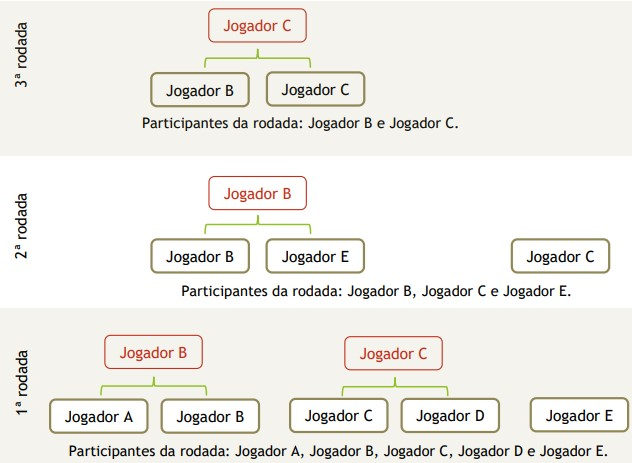
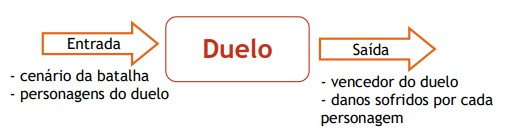

O jogo de batalha entre personagens baseados na Terra-Média que é o mundo do Senhor dos Anéis. A batalha ocorre por turnos de forma automática no formato de todos contra todos, considerando as características dos personagens. Cada personagem é de uma nação e possui 5 habilidades, conforme descrito a seguir.
As habilidades que os personagens possuem são força, velocidade, precisão, armadura e recuperação. Além da nacionalidade e das 5 habilidades, o personagem possui seus pontos de energia e um nome para identificá-lo ao longo de suas interações no jogo. No início do jogo, o personagem possui 100 pontos de energia e outros 100 pontos de habilidades que devem ser distribuídos entre as habilidades da forma que o jogador preferir.
Precisão: a precisão denota a capacidade na qual o personagem tem para infringir danos no adversário à longa distância;
Velocidade: o tempo no qual o personagem leva para se aproximar do adversário;
Armadura: o quanto reduz o impacto dos ataques do adversário, independente da distância na qual os ataques são realizados;
Recuperação: a capacidade de recuperar pontos para a próxima batalha.
Neste jogo, foram selecionadas as seguintes nações da Terra-Média:
A Batalha
A batalha é realizada em um cenário fixo no qual podem ser alocados até oito jogadores, sendo que só pode haver um personagem de cada nação. O cenário é fixo porque a batalha inteira ocorre neste único cenário escolhido. Dentre os cenários possíveis, o jogo pode definir qualquer uma das oito casas das nações.
Os vencedores de uma rodada são novamente distribuídos aleatoriamente para se enfrentarem em uma nova batalha. As rodadas são repetidas de acordo com a quantidade restante de personagens na arena, até que ocorra a batalha final e seja definido um personagem como o vencedor. O jogador que “sobrou” na rodada anterior não pode sobrar novamente na rodada seguinte. A Figura 1 exemplifica um cenário com cinco jogadores.
Não existem alianças e “amizades” entre os personagens, portanto eles se enfrentam em duelos de um contra o outro em cada rodada e o vencedor avança para a próxima rodada. No início da rodada, os personagens são distribuídos aleatoriamente em pares para realizarem a batalha e, caso a quantidade de personagens na batalha seja ímpar, um deles ficará fora da batalha e se classificará automaticamente para a rodada seguinte.

O Duelo
A batalha é realizada em turnos de duelos diretos entre dois personagens, conforme foi descrito anteriormente. Porém, é preciso descrever com mais detalhes como se deve determinar o vencedor de cada duelo.
Antes, deve-se observar que um duelo possui como informações de entrada: o cenário da batalha e os dois personagens do confronto com as suas características. Após o confronto, a informação de saída é o vencedor do confronto com os danos que sofreu e infringiu. Em outras palavras, conforme explicita a Figura 2, é preciso saber explicar o que ocorreu no duelo.
O confronto ocorre em turnos no qual cada personagem faz uma jogada que pode ser ataque, defesa ou movimentação em direção ao adversário.

Ataque
O ataque é o golpe desferido pelo personagem no adversário. O golpe possui uma probabilidade de atingir o adversário e essa probabilidade é calculada de acordo com a sua habilidade naquele tipo de ataque. O ataque pode ser do tipo:
ATAQUE CURTO - É o ataque no qual o jogador está entre zero e um passo de distância do adversário;
ATAQUE LONGO - É o ataque no qual o jogador está entre dois e dez passos de distância.
Defesa
A defesa é a ação que o personagem realiza para se proteger e reduzir os danos causados por golpes que podem ser desferidos pelo adversário. A defesa possui uma probabilidade de reduzir o dano do ataque e essa probabilidade é calculada de acordo com a sua habilidade naquele tipo de ataque. A defesa pode ser do tipo:
DEFESA CURTA - É aquela que visa proteger o personagem do ataque curto desferido pelo adversário;
DEFESA LONGA - É aquela que visa proteger o personagem do ataque longo desferido pelo adversário.